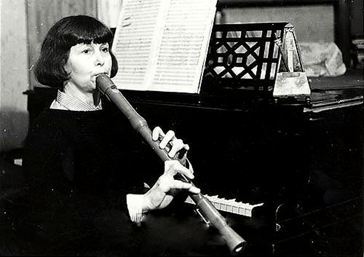
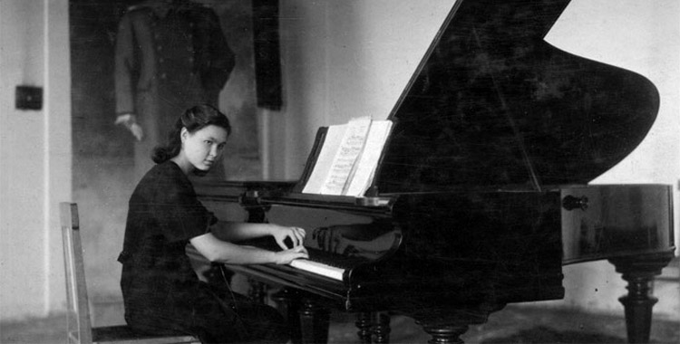
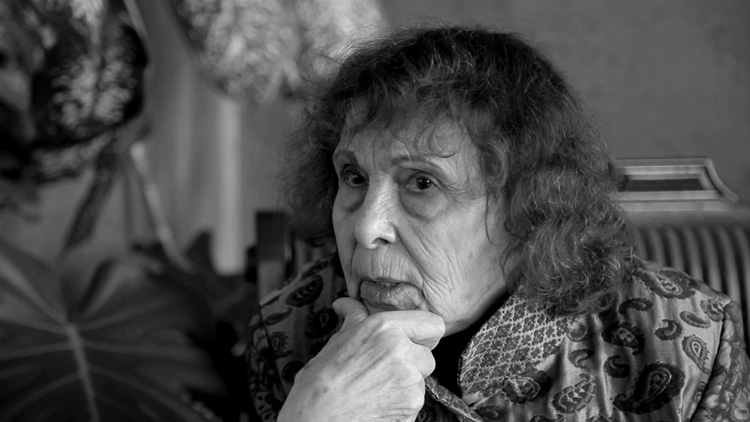
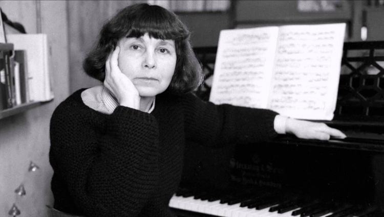

Композитор СОФЬЯ ГУБАЙДУЛИНА и ее ВЕРА
Софья Губайдулина: «Без веры человек становится плоским!»
автор: Роман УСАЧЕВ
Софья Губайдуллина. Это имя известно всем ценителям классической музыки в каждом уголке земного шара. Ее называют последним великим композитором ХХ века, считают живым классиком музыкального авангарда, на Западе Губайдулину, вместе с Альфредом Шнитке и Эдисоном Денисовым, причисляют к «великой русской тройке» композиторов новейшего времени.
Но для многих, кто узнает, что фундаментом, основанием творчества Софьи Асгатовны является ее христианская вера, это становится откровением… Так было и в ноябре 2016, когда композитор приезжала в Казань по случаю своего 85-летия, и рассказала о своих духовных исканиях.

Баян – Дух, виолончель – крест
Особое отношение маэстро к личности Иисуса Христа видно даже в названиях ее произведений: «Семь слов», сюита посвященная последним возгласам Сына Божьего, когда он был на кресте, «Ликуйте пред Господа», «Аллилуйя», «Размышление над хоралом И.С.Баха «И вот я перед троном Твоим», «Две тропы. Посвящение Марии и Марфе», «Страсти по Иоанну», «Пасха по Иоанну» и так далее. Причем, в этих произведениях существует и скрытый смысл, который так же отсылает нас к Евангелию. Например, считается, что в партите «Семь слов», баян символизирует Дух Святой. Ведь само слово дух на древнееврейском и древнегреческом языках, то же что и дыхание. А виолончель – символ Иисуса Христа, Его распятия. Ведь виолончель со смычком похожа на крест!
- Смысл творчества, - говорит Софья Асгатовна, - в сущности, религиозный. Естественно, духовной должна быть жизнь, а искусство – это наша духовная активность, наш ответ на любовь Творца. Искусство только этим и живет, для этого и создано, чтобы соединиться с небом! И любое художественное произведение в принципе религиозно... Мне кажется, что искусство вообще без этого «подъема по вертикали», в общем, и не существует. Всякое сочинение – это работа духа, уход от земного. Через искусство дух обретает форму. Потому что существование только в материальной плоскости уничтожает смысл жизни. В этом и суть искусства – возвращать жизни смысл.
Есть и еще один аспект, который для Губайдулиной роднит творчество и веру. Это – посвящение, без которого немыслимо ни то, ни другое.
- Сам художник – как жертва, - утверждает маэстро, - такой тип и такая сила самоотдачи, что это становится религиозным актом! Именно этот феномен дает право художнику творить. Конечно, в искусстве удовольствие присутствует, но это все же не самая главная цель. Мне кажется, искусство реализует какую-то очень высокую задачу: соединить Землю и Небо. Художника и Всевышнего. Удовольствие не является центральным понятием.

Встретить Бога и Дьявола
Сания, так называли Губайдулину в детстве, родилась в нерелигиозной семье. И хоть ее дед был муллой, переводил Коран на татарский язык, был из числа татарской интеллигенции, ее отец был «антирелигиозным человеком», как о нем отзывалась сама Софья. А так как это было время, когда в нашей стране господствовало атеистическое мировоззрение, то и ее мама обходила тему религии стороной. Маленькая Сания, очень любила своего папу, и многому научилась именно от него, но в вопросах веры, тем не менее, она пошла своим путем… И произошло это в очень раннем возрасте!
- Когда мне было лет 5, - вспоминает Губайдулина, - мы приехали в деревню, к одной очень религиозной женщине. У нее была икона Иисуса Христа Спасителя… И я Его узнала! Узнала Бога, Христа. Мне было 5 лет. Родители пришли в ужас от того, что я религиозна, и с того момента я поняла, что весь мой опыт веры под запретом, и я стала его скрывать от взрослых… Но он у меня жил, этот религиозный опыт.
Софья была очень остро и тонко чувствующей девочкой, и с раннего детства она открывала для себя, что существует не только светлая духовная сторона, но и тьма, зло, и оно так же близко, а порой, и внутри нас…
- Я помню одну пограничную ситуацию из моего детства, - откровенничает композитор. – Мы с сестрой обе занимались музыкой, и делили один инструмент – рояль. Играли на нем по очереди. Мне нужно было готовиться, а она не уходила: «Ну, еще 10 минут!», а потом снова: «Еще немного…» И я схватила ее и отшвырнула в сторону! Собственную сестру! Я, конечно, пыталась оправдывать себя: «Это самозащита, аффект…» Но это было зло, которое шло изнутри. Это дьявол во мне сидел.
Так с раннего детства Сания сердцем открывала и осознавала глубокие богословские понятия – первородного греха, добра и зла, света и тьмы, и, наконец, нужды в Спасителе.

Re-ligio
Вот как Губайдулина, через музыкальные термины – стаккато, то есть прерывистость, разорванность звуков, и легато, то есть связанность, плавность звучания, формулировала свое «богословие»:
- Я понимаю религию, - поясняет она, - в буквальном смысле этого слова. То есть ре-лигио, восстановление легато, лиги, восстановление связи между жизнью и высотой идеальных установок и абсолютных ценностей. Все наше обыденное существование происходит стаккато. Жизнь разрывает человека на части. Мы не успеваем сделать какую-то линию из своей жизни, но искусство нам позволяет эту линию сделать. И вот это легато, и есть религиозный акт по существу. Ведь нет более важной задачи, чем восстанавливать эту целостность всей нашей рассредоточенной жизни.
Для Софьи Асгатовны существование вне веры невозможно. И не только для нее самой, но и для всего человечества, всей человеческой истории, нет будущего без этого «вертикального измерения», как она его называет.
- Я убеждена, что без религии, - говорит Губайдулина, - без религиозного таланта, человек становится очень плоским. Он мыслит только в плоскости: причина-следствие. Только материальное остается: заработать, съесть, заработать, повеселиться, заработать, съесть... Остается эта плоскость, с которой никогда не выйти в другое измерение жизни, которое, в общем, и создало человека. Когда не только горизонталь, а еще и вертикаль. И, по существу, человечество никогда не жило без религиозного сознания, будь это даже язычество... Все равно человек куда-то возвышался от материальных забот, и на этом шла История.

Спасение в Любви
«О любви и ненависти», так называется Губайдулинская оратория, премьеру которой приурочили к 85-летию Софьи Асгатовны. Фактически, это произведение – молитва, ходатайство за мир захваченный злобой. Основой для оратории стал текст под названием «Простая молитва», который приписывают Франциску Асизскому. Это прошение о том, чтобы Бог сделал нас орудием Своего Мира, чтобы Всевышний научил нас любить и прощать.
- Эта молитва меня потрясла тем, - говорит Софья Асгатовна, - как там ставится вопрос о любви к Богу. Там сказано: «Боже, помоги мне не в том, чтобы меня утешали, но чтобы я мог утешить. Помоги мне не в том, чтобы меня понимали, но в том, чтобы я понимал. Не в том, чтобы меня любили, но чтобы я любил». И вот это — «помоги мне, Боже, чтобы я любил» — это же просто ко всей нашей цивилизации относится. В нашей цивилизации личность, конечно, развилась очень сильно, и это очень хорошо, но этот процесс дошел до такого предела, когда личность обращается только к себе, только к этому измерению. Это явление мы называем эгоизмом. И вот к нам ко всем обращена эта молитва. Вы думаете, что вы покинуты Богом, а подумайте: а любите ли вы, люблю ли я по-настоящему? Мне кажется, что это просто лично ко мне, ко всем нам, эгоистам, относится…
Два года я жила под этим впечатлением. "Чтобы я любил..." Как ясно человек начала ХХ века понял проблему, поставив в центр мироздания личность. Личность - это же очень хорошо. Но с другой стороны, в своем предельном осуществлении она ведет к тому, что следовало бы преодолеть - к эгоизму. "Я" в центре всех побуждений человеческих, но "Я", направленное на самое себя, уже совсем другое, чем Я, связанное с высшим началом, с тем, что мы называем Богом. Человеку нужно было бы прийти к Личности, обращенной к Богу.
Простая молитва:
Господи, сделай руки мои проявлением Твоего мира,
и туда, где ненависть, дай мне принести Любовь,
и туда, где обида, дай мне принести Прощение,
и туда, где рознь, дай мне принести Единство,
и туда, где заблуждение, дай мне принести Истину,
и туда, где сомнение, дай мне принести Веру,
и туда, где отчаяние, дай мне принести Надежду,
и туда, где мрак, дай мне принести Свет,
и туда, где горе, дай мне принести Радость.
Помоги мне, Господи,
не столько искать утешения, сколько утешать,
не столько искать понимания, сколько понимать,
не столько искать любви, сколько любить.
Ибо кто отдает — тот получает,
кто забывает себя — вновь себя обретает,
кто прощает — тому прощается,
кто умирает — тот возрождается в Вечной жизни.